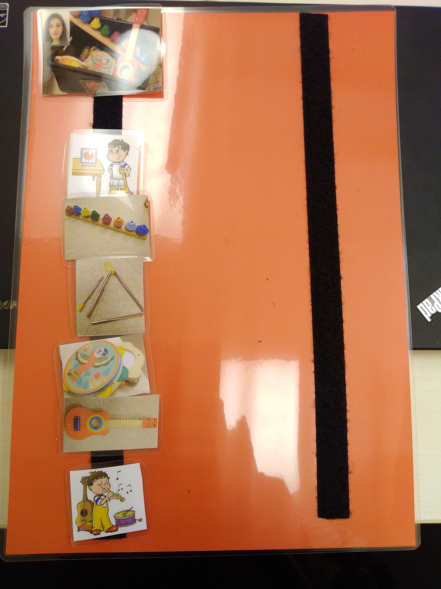

Docteur en psychologie

Programmation | Neurosciences dévelopmentales | Imagerie cérébrale
Réseaux
Me contacter
Email : anne-lise.marais [at] unicaen [dot] fr
Psychology
Bénévolat (2020-2022)
J'ai supervisé des psychologues (libéral et éducation nationale) durant deux ans. Environ deux heures par mois, je réalisais de l’aide au diagnostic et à la prise en charge de cas complexes et de la régulation des relations interpersonnelles, des émotions et des interprétations du psychologue dans les situations qui lui posent problèmes.
J'ai également fait des entretiens de première intention pour orienter les parents en difficulté, particulièrement dans le cadre de trouble neurodéveloppementaux.
Michel Tregore unité d'enseignement maternelle, stage (2019-2020)
Mon stage principal a eu lieu à l'unité d'enseignement maternelle Michel Trégore gérée par l'association Autisme Apprendre Autrement. Sont accueillis sept enfants de trois à six ans, diagnostiqués avec un trouble du spectre de l'autisme, parfois associé à une déficience intellectuelle. Les prefessionnelles de l'unité permettent l'intégration de ces enfants dans le système éducatif ordinaire.
Ce stage m'a permis d'obtenir le titre de psychologue.
Durant ce stages, j'ai rélisé deux projets principaux : (1) j'ai créé un atelier d'éveil à la musique et (2) j'ai fait le projet d'accompagnement et thérapeutique d'une enfant de quatre ans qui présentait un trouble du spectre de l'autisme associé à une fente palatine l'empêchant de parler.
L'atelier musique
 J'ai créé un atelier d'éveil musical adapté à cette population. Pour cinq des enfants, j'ai fait des séances individuelles en raison de leurs difficultés (sensorielles, comportementales ou attentionnelles). J'ai donc créé une remédiation musicale adaptée à chaque enfant, travaillant chacun sur leur difficultés ainsi que sur les compétences sociales (regarder dans les yeux, attention conjointe, etc). Cet atelier a permis de mettre en place une bonne alliance thérapeutique en peu de temps.Avec deux autres enfants qui n'ont pas de déficience intellectuelle, j'ai crée un groupe où ils travaillaient ensemble à faire de la musique et où j'évaluais leurs compétences cognitives.
J'ai créé le projet d'éveil musical dans l'objectif de créer un partenariat avec le conservatoire de la vile, où j'ai rencontré le directeur du département du handicap.
Le projet d'accompagnement
J'ai réalisé le projet d'accompagnement d'une enfants de quatre ans qui présentait un trouble du spectre de l'autisme, une fente palatine empêchant sa communication orale et les professionnels portaient une suspicion de déficience intellectuelle. L'objectif était d'évaluer ses compétences afin de modifier ses objectifs d'accompagnement de dernière année de maternelle pour son intégration en CP ordinaire. J'ai utilisé le VB-Mapp, le WISC-V et la BRIEF pour évaluer ses compétences.
Institut Médico-Edicatif Les Coteaux, stage (2019)
J'ai fait un stage à l'IME Les coteaux. L'IME accueille des enfants de 10 à 20 présentant une épilepsie sévère pharmacorésistante associée à une déficience intellectuelle. Durant ce stage, j'ai réalisé des entretiens individuelles, des tests psychométriques (WISC-V, PEP-3, etc), j'ai animé un atelier sexualité, etc.
SAAS/SSEFS La providence, stage (2019)
J'ai fait un stage au SAAAS/SSEFS La providence qui accueille des enfants (6-20 ans) présentant une déficience sensorielle (visuelle, auditive ou les deux) ou un trouble sévère des apprentissages.